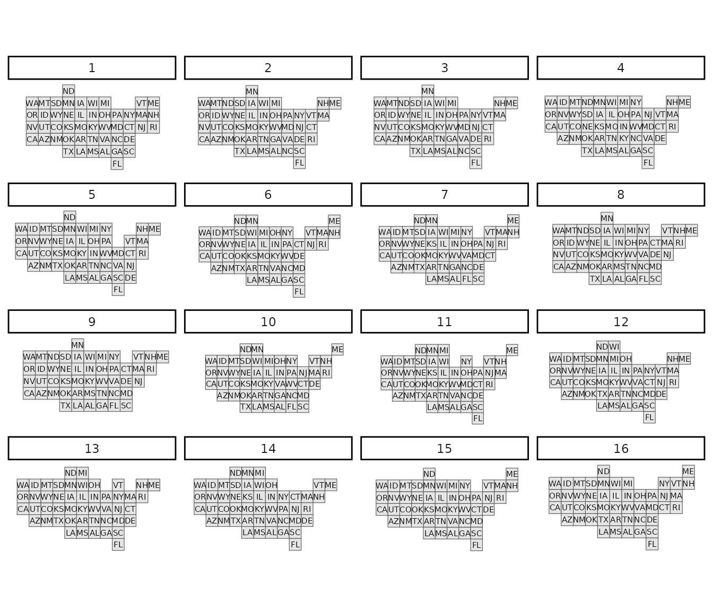
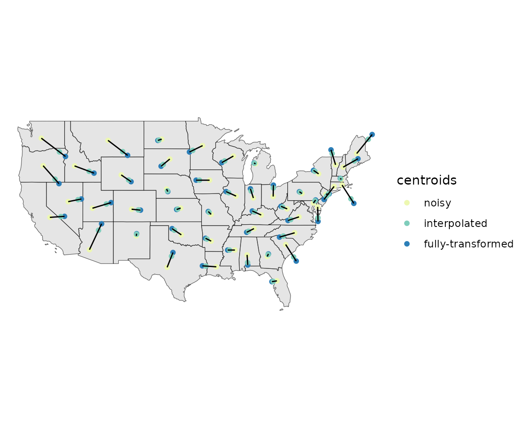
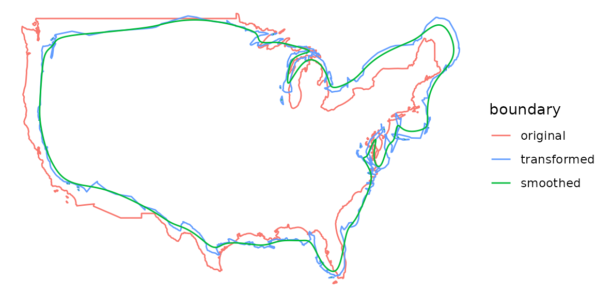

What is a Tile Map?
A tile map is a map in which each region is represented by a single
tile of the same shape and size. For example, a square tile map of the
United States would consist of square tiles of the same size for each
state, regardless of the geographic area of each state. When creating a
tile map, the goal is to arrange tiles in a manner that preserves local
relationships between regions, as well as the overall shape of the
original map. Using a tile map is advantageous when trying to visualize
data where the importance of a region does not depend on the geographic
area of the region. Tile maps prevent regions with large areas from
dominating a map and prevent regions with small areas from going
unnoticed. The tilemaps package implements an algorithm for
creating tile maps that was proposed by Graham McNeill and Scott Hale in
the paper “Generating Tile Maps” (2017). The package allows the
user to generate a single tile map or many tile maps, which can be
compared by using cost functions or by plotting the maps.
Creating a Single Tile Map
To create a single tile map, the generate_map() function
can be used. In the following example, a tile map with flat-topped
hexagons is generated for the contiguous United States using the
governors dataset, which is part of the
tilemaps package.
governors <- governors %>%
mutate(tile_map = generate_map(geometry, square = FALSE, flat_topped = TRUE))
ggplot(governors) +
geom_sf(aes(geometry = tile_map)) +
geom_sf_text(aes(geometry = tile_map, label = abbreviation),
fun.geometry = function(x) st_centroid(x)) +
theme_void()The generate_map() function requires an object of class
sfc_POLYGON or sfc_MULTIPOLYGON as input. If
the coordinates of the sfc object are in terms of longitude
and latitude, the coordinates will need to be transformed to a planar
projection before creating the tile map. The square
argument controls whether the tiles are squares or hexagons, and the
flat_topped argument controls whether or not hexagons are
flat-topped.
The generate_map() function only works for contiguous
regions. However, after a tile map has been generated, the
create_island() function can be used to add islands to the
layout of the tile map. The create_island() function takes
two arguments. The first is an sfc_POLYGON object
representing the layout of a tile map, and the second is the position of
the new island tile. The position argument can be specified
as either a numeric vector of length 2 giving the coordinates for the
centroid of the new tile, or a string equal to “upper left”, “lower
left”, “upper right”, or “lower right” indicating in which corner of the
original tile map the new tile should be located. In the following
example, tiles for Alaska and Hawaii are added to the previously
generated tile map.
all_states <- governors %>%
add_row(abbreviation = "AK", party = "Republican",
tile_map = create_island(governors$tile_map, "lower left")) %>%
add_row(abbreviation = "HI", party = "Democrat",
tile_map = create_island(governors$tile_map, c(-12050000, 3008338)))
ggplot(all_states) +
geom_sf(aes(geometry = tile_map)) +
geom_sf_text(aes(geometry = tile_map, label = abbreviation),
fun.geometry = function(x) st_centroid(x)) +
theme_void()Once a tile map has been created, coloring tiles according to another variable is simple. In the following code, the states are colored according to the party affiliation of the governor. This is an example of a situation where it is useful to use a tile map, instead of a regular map, because each state has only one governor, regardless of the area or population of the state.
ggplot(all_states) +
geom_sf(aes(geometry = tile_map, fill = party)) +
geom_sf_text(aes(geometry = tile_map, label = abbreviation),
fun.geometry = function(x) st_centroid(x)) +
scale_fill_brewer(palette = "Set1") +
ggtitle("Party Affiliation of United States Governors (2020)") +
theme_void()The layout of a tile map can easily be written to a shapefile for later use or to share with others as follows.
st_write(governors$tile_map, "us_tilemap.shp")Creating Many Tile Maps
To create and compare more than one tile map, the
many_maps() function can be used. In the following example,
16 candidate tile maps are generated and plotted.
us_maps <- many_maps(governors$geometry, governors$abbreviation,
prop = c(0, 0.1), interpolate = c(0.5, 1),
smoothness = c(0, 20), shift = list(c(0,0), c(0,0.5)))
The different candidate tile maps are generated by adding sources of
variation at different steps in the algorithm. The prop,
interpolate, smoothness, and
shift arguments control these sources of variation and will
be discussed in more detail later. The total number of maps generated by
the many_maps() function is the product of the lengths of
each of these arguments. The output of the many_maps()
function is a data frame in which each row corresponds to one map and
the columns contain the generated maps, the parameters used for creating
the maps, and the costs associated with each map. The data frame is
ordered by the total cost. The different types of costs will be
discussed in more detail later as well. After comparing the tile maps
that were generated, the tile map that the user wishes to use can be
added to the original data frame and plotted.
governors <- governors %>%
mutate(square_map = us_maps$map[[1]])
ggplot(governors) +
geom_sf(aes(geometry = square_map)) +
geom_sf_text(aes(geometry = square_map, label = abbreviation)) +
theme_void()The plot of all the candidates maps shown above can be generated
using the plot_many_maps() function. The function requires
a list of maps, which are of class sfc_POLYGON, and the
labels for the regions of the map. Below is code for how the
plot_many_maps() function can be used to create the same
plot as before.
plot_many_maps(us_maps$map, governors$abbreviation)The Algorithm
The four main steps of the algorithm used to generate a tile map are
transforming the region centroids, transforming the boundary, fitting
tiles to the boundary, and assigning regions to tiles. The
prop, interpolate, smoothness,
and shift arguments of the generate_map() and
many_maps() functions are used to introduce variation at
different steps in the algorithm, which can lead to different candidate
maps. How each step of the algorithm works and how variation is
introduced will now be discussed in greater detail.
Transforming the Centroids
The first step of the algorithm is to transform the region centroids
so that centroids of neighboring regions are approximately equidistant
but the relative orientation of neighbors is still preserved. The
prop argument can be used at this step of the algorithm to
add variation. Before transforming the original region centroids,
Gaussian noise is added to the position of each centroid. The standard
deviation for the Gaussian noise is defined as a proportion of the mean
distance of a region centroid to its neighbor centroids, and the
prop argument is used to control this proportion. After
noise has been added to the centroids, the centroids are iteratively
updated until they converge. The formula used to update the noisy
centroids is given by McNeill and Hale in “Generating Tile
Maps” (2017).
Before moving to the next step of the algorithm, another source of
variation can be added. Throughout the remaining steps of the algorithm
the fully-transformed centroids can be used, or interpolated centroids
can be used. The interpolated centroids are defined through linear
interpolation between the noisy centroids and fully-transformed
centroids. If straight lines were drawn between the noisy centroids and
fully-transformed centroids, then the interpolated centroids would be
the points at a specified proportion of the distances along the lines.
The interpolate argument controls the proportion. If the
interpolate argument is set equal to 0, then the noisy
centroids would be used in the remaining steps of the algorithm, and if
the interpolate argument is set equal to 1, then the
fully-transformed centroids would be used. If the
interpolate argument is set equal to 0.75, then the points
that are at 75% of the distance between the noisy centroids and
fully-transformed centroids would be used.
Using the same United States dataset as before, the plot below shows
the noisy, interpolated, and fully-transformed centroids when the
prop argument was set equal to 0.1, and the
interpolate argument was set equal to 0.75. Notice that in
the plot the centroids of states in the northeast are being pushed out,
while centroids of states on the west coast are being pulled toward the
center of the map. This results in the centroids of neighboring states
being approximately equidistant. Throughout the remaining steps of the
algorithm, the interpolated centroids will be used.

Transforming the Boundary
The next step of the algorithm is to transform the boundary of the
map based on the new centroids. The boundary is pulled in toward the new
centroids if the boundary is more than the estimated tile size away from
the centroids, and the boundary is pushed away from the new centroids if
the boundary is less than the estimated tile size away from the
centroids. At this step, the boundary of the map is first converted to a
set of points, and then a sample of approximately 1,000 points is taken
from that set. The sampled boundary points are transformed according to
the formula given in “Generating Tile Maps” (McNeill and Hale
2017). After the sample boundary points have been transformed, they are
then converted to a polygon. To introduce variation at this step in the
algorithm, the transformed boundary can be smoothed. The
smooth() function from the smoothr package is
used to perform kernel smoothing of the boundary. How much the boundary
is smoothed is controlled by the smoothness argument. The
smooth() function calculates the bandwidth of the Gaussian
kernel used for smoothing as the mean distance between adjacent points,
and the bandwidth is then multiplied by the value given for the
smoothness argument. The greater the value of the
smoothness argument, the more smooth the boundary will
become. Below is a plot with the transformed and smoothed boundaries of
the United States with the smoothness argument set equal to
20. Notice that the transformed boundary is now outside the original
boundary around the northeast and the transformed boundary is within the
original boundary along the west coast. For the remaining steps of the
algorithm, the smoothed boundary will be used.

Fitting Tiles to the Boundary
The third step of the algorithm is to fit tiles inside the
transformed boundary. This is done by first creating a grid of tiles
that covers the bounding box of the transformed polygon. The size of the
tiles is estimated by first finding the total area of the map, dividing
it by the number of regions, and then taking the square root. After
creating the initial grid, the number of tile centroids that are inside
the transformed boundary is found. Depending on whether the number of
tile centroids inside the boundary is greater than or less than the
number of regions in the map, the tile size is either increased or
decreased, and then a new grid of tiles is created. This process is
repeated until the correct number of tile centroids are within the
transformed boundary. Variation can also be added at this step by
shifting the grid of tiles before counting the number of tile centroids
that lie within the transformed boundary. The shift
argument is a numeric vector of length two for the
generate_map() function or a list of numeric vectors of
length two for the many_maps() function. The first value of
the vector determines the amount to shift in the x direction and the
second value determines the amount to shift in the y direction. The
values given in the vector are multiplied by the tile size, and the
resulting value is the amount that the grid is shifted. For example if
c(0.5,0.5) was given for the shift argument in the
generate_map() function, then the grid of tiles would be
shifted by half a tile in both the x and y directions. In the final step
of the algorithm, a square grid, which was shifted by half a tile in
each direction, will be used.
Assigning Regions to Tiles
To complete the tile map, the regions of the original map must be assigned to the tiles of the tile map. The assignment of regions to tiles is chosen to minimize the sum of the squared distances between transformed region centroids and the assigned tile centroids. This an example of the well-known linear sum assignment problem. This problem can be solved using an algorithm known as the Hungarian method, which was first developed by Harold Kuhn (1955). A plot of the resulting tile map is shown below.
Calculating Costs
In “Generating Tile Maps” (2017), McNeill and Hale describe
four different cost functions that can be used to compare tile maps. The
first is a location cost, which is the mean distance between the
transformed centroids and tile centroids divided by the tile size. The
next cost is an adjacency cost, which is the mean of the proportion of
neighbors that each region is missing. The relative orientation cost is
a measure of how much the angles between centroids of neighboring
regions change. First the mean change in angles between a region
centroid and its neighboring centroids is found for each region. Then
the final relative orientation cost is the mean of the means of the
regions. The final cost is a roughness cost. This cost is based on how
many edges in the tile map are shared edges. These four costs can be
combined into one total cost as a weighted sum. The data frame output by
the many_maps() function includes columns for each of the
costs, and the weights argument can be used to control the
weight for each cost when calculating the total cost.